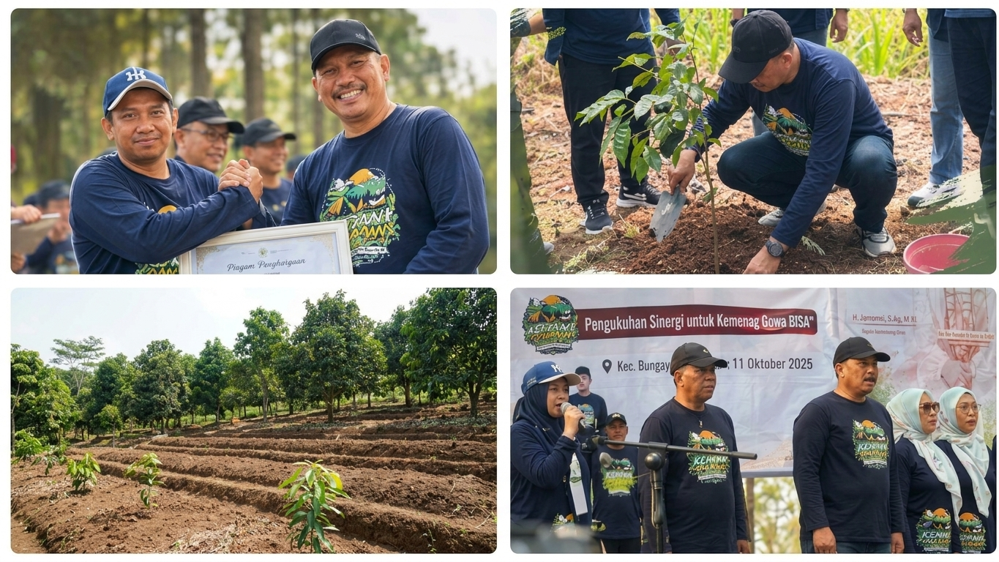

Pantau
Capaian
Ekoteologi
Si-Barisan merupakan aplikasi yang digunakan untuk mencatat kegiatan dan memantau capaian Gerakan BARISAN-SIPAKAINGE di Sulawesi Selatan: saling mengingatkan untuk menjaga bumi dengan kearifan lokal.
Input laporan Lihat capaian


Indikator
BARISAN
Bersih, Asri, Rindang, Indah, Sehat, Aman, Nyaman
Capaian
Keseluruhan
0Laporan kegiatan
0%Capaian keseluruhan
0Wilayah terlibat
0Laporan bulan ini
Total realisasi dibanding target semua indikator
Input
Laporan Monev
Isi satu laporan untuk setiap kegiatan yang sudah dilaksanakan.

Daftar Laporan
| Tanggal | Kegiatan | Wilayah | Indikator | Realisasi/Target | Capaian |
|---|
Belum ada laporan. Isi formulir di atas atau muat contoh data.